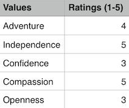

Mostly Meta Learning
My journey through Dev Bootcamp and beyond.
Valuable Affirmations
These values have make up a large part of who I am today:
I have been alone in strange places quite often. The experience has pushed me to adapt and learn, and be fiercely independent. My independence is a large part of who I am today, it is so gripping and innate, that it can even be a hindrance. I’ve often suffered from the ‘martyr syndrome’ where I trick myself into believe that I’m alone in something trekking up a steep hill with no one to support me. Even when that assumption is completely wrong an unnecessarily exaggerated. I have always valued compassion as well. I am so grateful for friends who care about me and show me kindness even when I may not have been the best friend to have over the years. I can still wake up every morning and say that I genuinely love these people in my life and I want nothing but the best for them. They keep me eager to help society and challenge norms. I also believe in being confident and open about who I am as a person. And I am an adventurer at heart.
Adventure!
I can’t count the number of times I’ve been the one pushing people to try things they’ve never done before. I’ve traveled the world to make lasting friendships with people who were once strangers on other continents. I’ve hiked around the north campus woods at UCSC with my friends to find hidden creeks, forts, and waterfalls. When I don’t have the opportunity to experience new things and explore, I have felt stuck and defeated. I remember just aching to get out of places I have lived even after just a couple years. I’m a thrill seeker in more ways than one. I’m always hunting down a brand new adventure. I am addicted to the feeling of a new scene, with new interesting people whom I haven’t met. Its something that inspires me enough to put all threats to my identity aside and just focus on the moment given to me. It just makes me feel alive.
Often times, I find myself getting stuck in a pattern of ‘what ifs’… “What if I can’t handle my relationship and work simultaneously while I’m at DBC?”… “What if I get sick and have to drop out?”… “What if I don’t gain anything fruitful out of this experience?”…”What if I can’t keep up with everyone else?”…”What if I don’t really know all the things I think I know?”… The list can be dangerously endless and overwhelming. My deep seeded impostor syndrome leaves me feeling determined to prove everything to myself in a concrete way for anything to be considered valid. But when I think about things through the lens of an adventure. Something new that I am ready to work hard at and achieve, the ‘clouds part’. I am enthusiastic, intrigued, impatient, and literally giddy with excitement when I think about having the opportunity to go somewhere new and meet new people. I am so grateful for this but so nervous at the same time.
I know that things aren’t always going to be easy at DBC. I know that I am going to have to grapple with difficult concepts, keep learning as much as I can, and I know the material is going to be endlessly challenging. I can remember every detail of the day that I broke down because I realized that I have officially sunken 12 thousand dollars into something I have never done before. But I’m confident in one thing: I have the ability to learn and better myself. If I think back to the start of Phase 0 (which I can’t believe was 2 months ago) I know so much more now than back then. So I have proved one thing to myself, I have proved that I have the ability to learn. I can still teach myself, the neuroplasticity of my brain is not lost. Even though this fact might seem trivial, it keeps me at peace because it is one fact that I have proven about my own capability, this is one thing my impostor syndrome can not take away from me.
But what if I do find myself overwhelmed, distraught, and unable to to find my motivation or strength? I have a couple immediate solutions. My first reaction is to take a deep breath and physically separate myself from my work. I like to take solitary introspective walks, just breathing in the fresh air, giving myself the pep talk I need to move forward. Sometimes I’ll even roll out a yoga mat and get myself started with a Bikram or Vinyasa routine — just to focus completely on my own wellbeing and health. But what if this isn’t enough? Thats when I have to pick up the phone and talk to people. I love having long Skype conversations with my closest friends; we laugh, vent, and just support each other with the best intentions. I’m lucky to have them. I also love to dance! Impromptu dance parties is the perfect cure for the moodiest of days.
By Sharmila Jesupaul on October 9, 2014